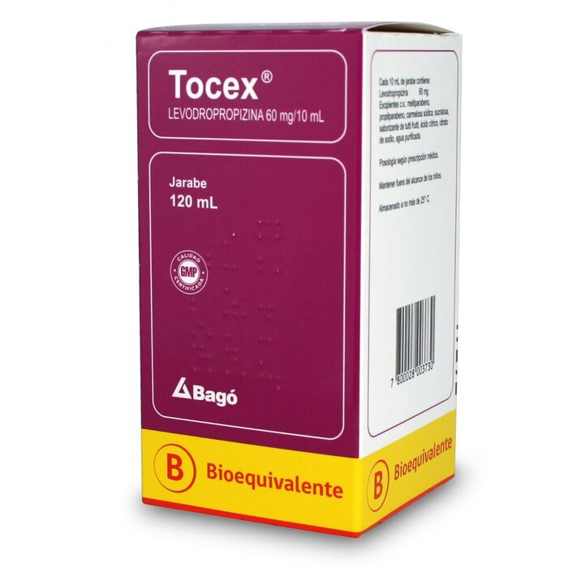
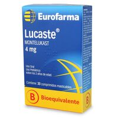
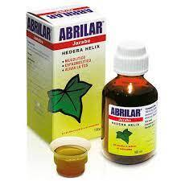
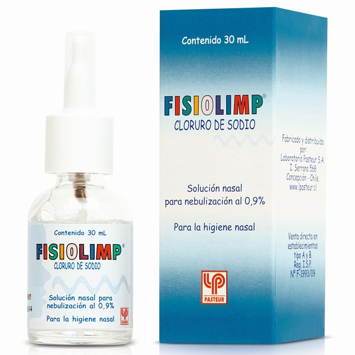
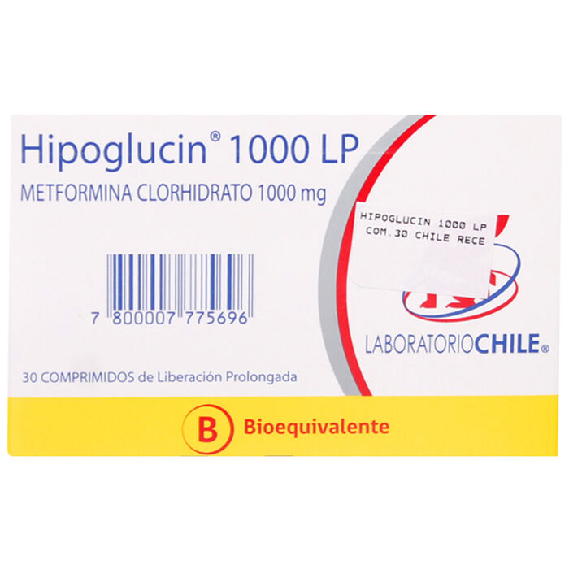
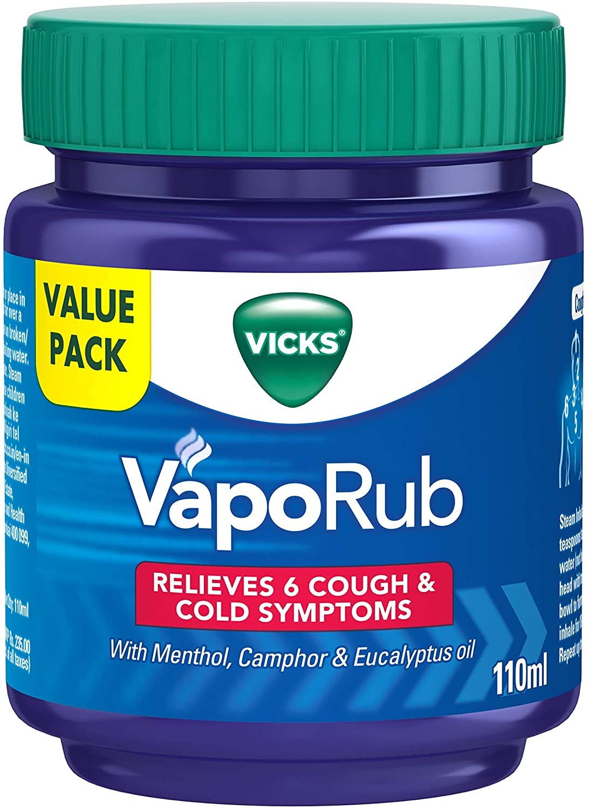

DESTACADOS DE INVIERNO
Tocex Levodropropizina 60 mg / 10 mL Jarabe 120 mL
Tratamiento sintomático de la tos, Antitusígeno de acción periférica a nivel traqueobronquial asociado con actividad antialérgica y antibroncoespástica.
EUROFARMA Lucaste Montelukast 4 mg 30 Comprimidos Masticable
Se usa para prevenir sibilancia, dificultad para respirar, opresión en el pecho y tos causada por asma en adultos y niños mayores de 12 meses de edad. Montelukast también se usa para prevenir broncoespasmo (dificultad para respirar) durante el ejercicio en adultos y niños mayores de 6 años de edad. El montelukast también se usa para tratar los síntomas de rinitis alérgica (una condición asociada con los estornudos y congestión nasal, secreción nasal o con picazón) estacional (ocurre solamente en ciertas épocas del año) en adultos y niños mayores de 2 años de edad, y rinitis alérgica constante (ocurre todo el año) en adultos y niños mayores de 6 meses de edad.
Abrilar Hedera Helix 0,7 gr Jarabe 100 mL
Solución expectorante de origen natural, cuya sustancia activa aislada y purificada de la Hedera helix (hoja de hiedra) es la saponina alfa-hederina, la cual es responsable de su triple acción terapéutica: mucolítico, broncoespasmolítico y antitusígeno. Esta triple acción terapéutica explica su eficacia en el tratamiento de las afecciones broncopulmonares que cursan con tos y aumento de las secreciones mucosas o con tos seca irritativa y obstrucción de la vía aérea al mejorar objetivamente parámetros de la función respiratoria como CV, VEF1, disnea, etc.
Fisiolimp Cloruro De Sodio 0,9% Solución Nasal 30 mL
está indicado en la higiene y lavado de las fosas nasales en adultos y niños, cuando las condiciones fisiológicas lo requieran: congestión nasal, irritación nasal, ardor, obstrucciones, resfríos, coriza y heridas nasales.
Hipoglucin 1000 Lp Metformina 1000 mg 30 Comprimidos
Metformina se utiliza, junto con medidas nutricionales y ejercicio físico, para tratar a pacientes con diabetes tipo 2 y otras condiciones en las que se han alterado los niveles de azúcar o insulina en la sangre. Metformina no se utiliza para tratar diabetes tipo 1.
Vaporub Mentol 1,35% Unguento 50 gr
El Vick Vaporub creado para aliviar la congestión nasal y demás síntomas en situaciones de gripe y resfriado.